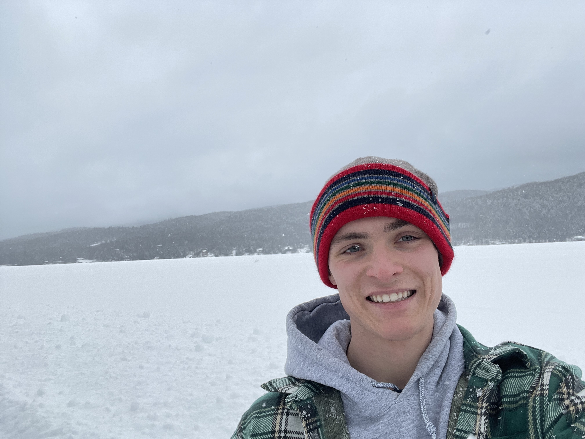

Anderson Toler
Undergraduate Researcher
Thayer School of Engineering, Dartmouth College
Anderson dives into energy storage systems and explores how people interact with the electricity grid. He models demand-side behavior and experiments with grid resilience strategies.
Education: B.S. Electrical Engineering, minor in Chinese & Statistics, Dartmouth College (expected 2026)
Hobbies: Hiking, discovering hidden gems in books, and chasing adventures outdoors.